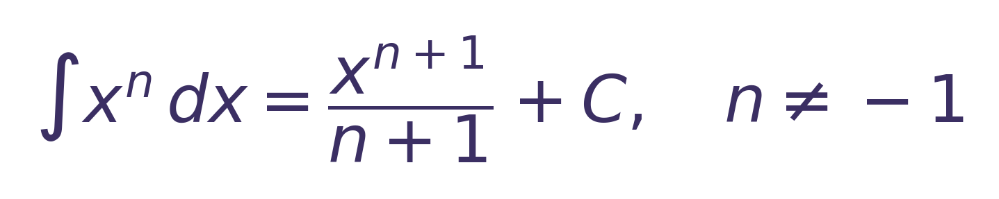

✦ LKPD Digital Matematika ✦
Integral Detective
Menemukan Fungsi Asal – SMA Kelas XI
Hari ini kamu menjadi detektif matematika. Petunjuknya: sebuah fungsi dan turunannya. Tugasmu adalah menemukan hubungan keduanya, lalu menelusuri jalan kembali dari turunan ke fungsi asal. Dari sinilah konsep integral tak tentu akan kamu temukan sendiri.
Identitas
Petunjuk Penggunaan
- Baca setiap kegiatan secara berurutan.
- Amati informasi yang diberikan.
- Kerjakan pertanyaan sesuai hasil pengamatan.
- Diskusikan jawaban dengan anggota kelompok.
- Jangan langsung mencari rumus sebelum menemukan pola.
- Gunakan konsep turunan untuk memeriksa hasil integral.
- Gunakan tombol “Cek” jika tersedia.
- Jawaban yang bersifat reflektif tidak dinilai otomatis.
Mengamati Turunan
Ingat kembali konsep turunan. Tentukan turunan dari setiap fungsi berikut, lalu tekan Cek.
1. Apa hubungan $F(x)$ dengan $F'(x)$?
2. Jika yang diketahui $F'(x)$, apakah mungkin menemukan $F(x)$? Jelaskan.
Menentukan Masalah
Diketahui $F'(x)=3x^2$. Bagaimana cara menemukan fungsi $F(x)$ yang memiliki turunan tersebut?
Rumuskan masalahnya dengan kata-katamu sendiri. Jawaban di sini tidak dinilai otomatis.
Petunjuk: pertanyaan dapat berkaitan dengan cara menentukan fungsi asal dari suatu turunan atau pola yang digunakan untuk menentukan fungsi tersebut.
Menemukan Pola Integral
Perhatikan pasangan turunan dan fungsi asalnya. Lengkapi kedua tabel pola berikut, lalu tekan Cek.
Pola Perubahan Pangkat
Pola Perubahan Koefisien
Bagaimana perubahan pangkat $x$?
Bagaimana perubahan koefisien?
Mengapa ketika mencari fungsi asal, pangkat $x$ bertambah 1?
Pola yang kamu temukan

Pangkat bertambah 1, lalu koefisien dibagi dengan pangkat yang baru. Konstanta $C$ ditambahkan di akhir. Rumus ini berlaku untuk $n\neq -1$.
Menguji Pola
Gunakan pola yang telah ditemukan untuk menyelesaikan integral berikut.
Memeriksa Kebenaran Hasil
Gunakan kembali konsep turunan untuk memeriksa kelima jawaban sebelumnya. Turunkan hasil integral, lalu tentukan apakah hasilnya sama dengan fungsi yang diintegralkan.
Perhatikan Konstanta $C$
Ketika $F(x)=x^3$ dan $G(x)=x^3+5$, maka $F'(x)=3x^2$ dan $G'(x)=3x^2$.
Mengapa dua fungsi yang berbeda dapat mempunyai turunan yang sama?
Apa peran $C$ dalam integral tak tentu?
Menarik Kesimpulan
Lengkapi kesimpulan berikut berdasarkan hasil penemuan kelompok kalian. Untuk rumus, gunakan cara penulisan pada kartu petunjuk (contoh: a/(n+1)*x^(n+1)+C).
Refleksi
Jawabanmu disimpan, tetapi tidak dinilai benar atau salah.
1. Hal baru apa yang kalian temukan tentang hubungan turunan dan integral?
2. Bagian kegiatan mana yang paling membantu kalian menemukan konsep integral?
3. Apakah kalian sudah dapat menjelaskan mengapa integral disebut kebalikan dari turunan?
4. Hal apa yang masih membuat kalian bingung?